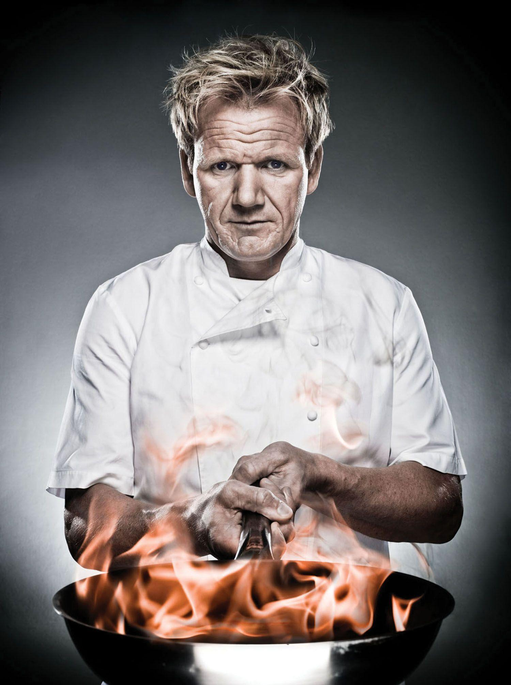

Menu
Reservations
Contact Us & About Us
Menu
Reservations
Contact Us & About Us
Mattia's Trattoria is a new Italian restaurant inspired by the feel of an Italian neighborhood trattoria. Perched between Medford and Somerville, Mattia's Trattoria is a cozy yet sophisticated neighborhood destination. For the head chef Mattia, who lives right up the street, Mattia's Trattoria is an extension of his living room. He's brought together his love of great food, easy hospitality and chic vibe to create a lively space that is welcoming to all looking for a memorable meal. With dishes that lean heavily on Italian flavors but are not restricted by any rules of the cuisine, the food is unpretentious and delicious. A dual-opening fireplace wrapped in white ceramic, an oversized salvaged communal table designed for side-by-side dining and rich leather banquets are just some of the design elements that make up Mattia's Trattoria charm.

Thank you for visiting our website.
If you have any questions, please feel free to send us a message using the form below.
Someone from our team will get back to you shortly.